♣ BRIEF INTRODUCTION
- Agriculture is the practice of cultivating plants and raising animals for food, fiber, medicinal plants, and other products used by humans.
- It is one of the oldest and most important human activities, providing sustenance and resources for civilizations throughout history.
- Agricultural practices vary across regions and cultures, influenced by factors such as climate, soil types, available resources, and technological advancements.
- The primary goal of agriculture is to produce food to feed the growing population and ensure food security.
- Crops are cultivated in agricultural fields through various methods such as plowing, planting, fertilizing, and irrigation.
- Livestock farming involves the rearing of animals for meat, milk, eggs, and other byproducts.
- Modern agriculture incorporates technology and machinery, such as tractors, irrigation systems, and genetic engineering, to increase efficiency and productivity.
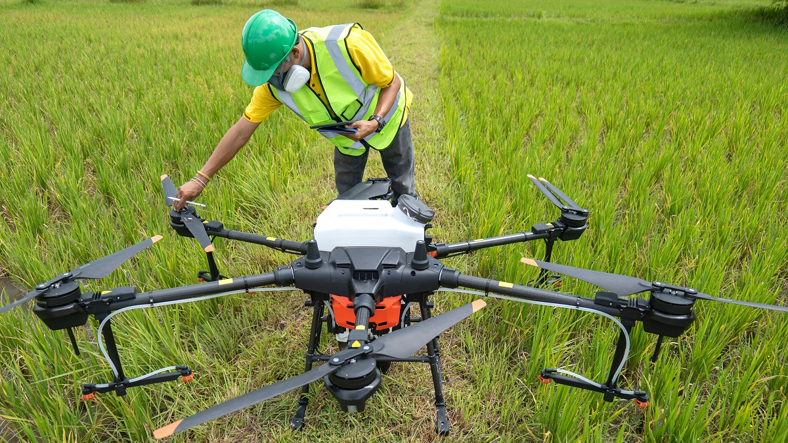
 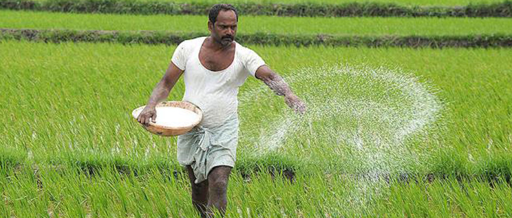
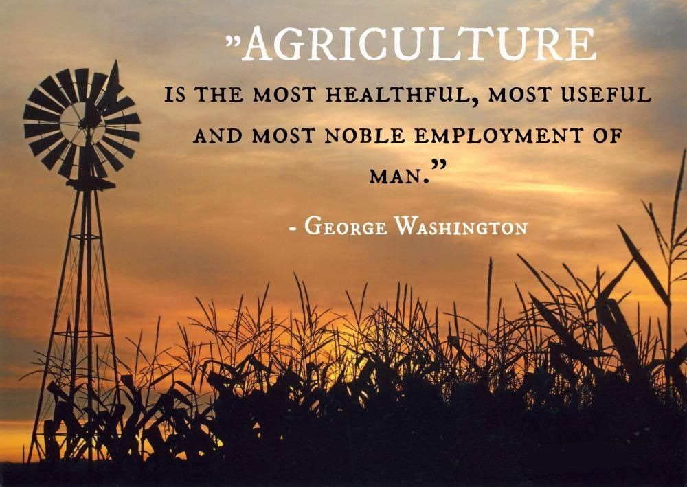
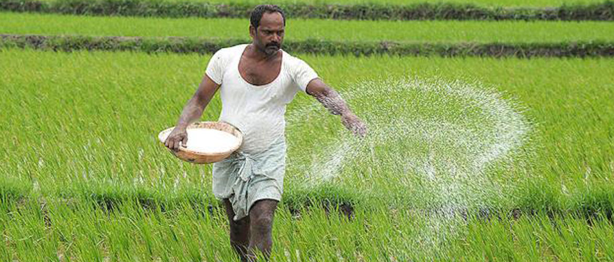
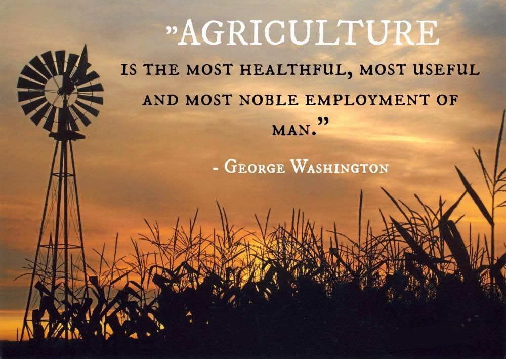
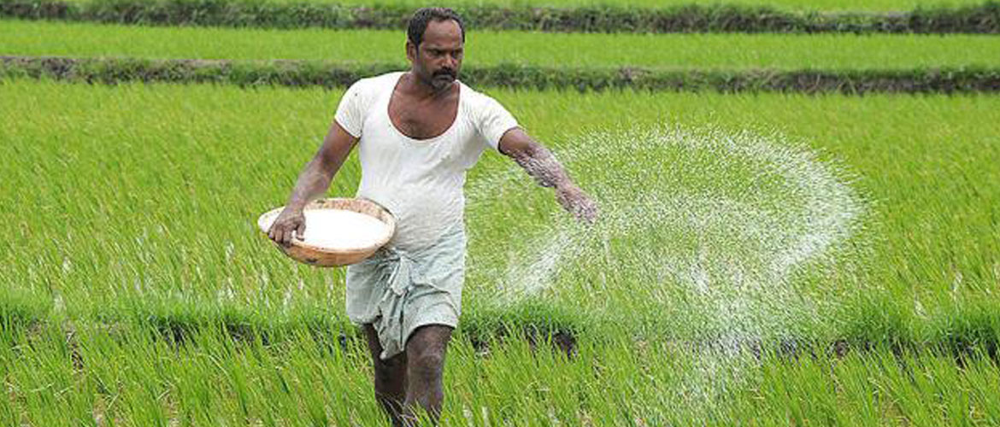
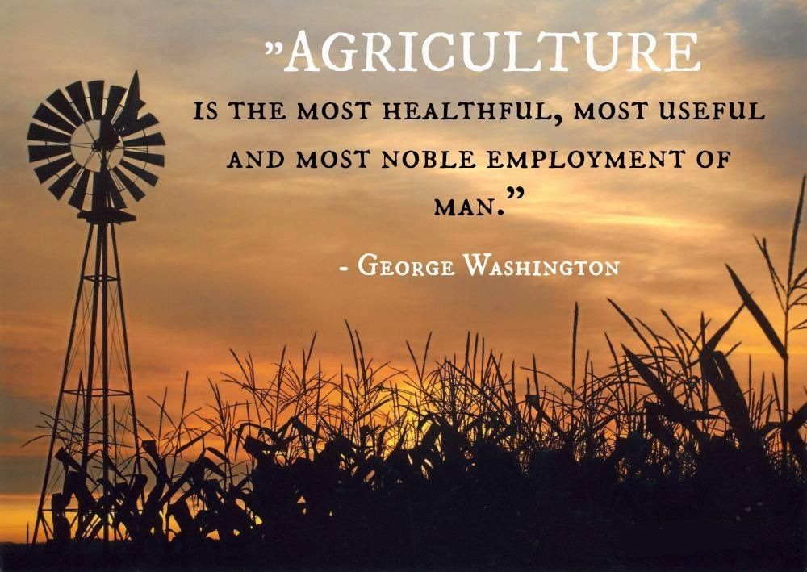
♣ EVOULUTION
- 10,000-12,000 years ago: Agriculture first emerged in various parts of the world, including the Middle East, China, Mesoamerica, and South America.
- 8,000 years ago: Domesticated animals, such as cattle, sheep, and goats, became widespread.
- 5,000 years ago: Irrigation systems were developed to provide water for crops.
- 1,500 years ago: The use of fertilizers and crop rotation became more common.
- 1700s: The Industrial Revolution led to the development of new agricultural technologies, such as the steam engine and the threshing machine.
- 1900s: The Green Revolution led to the development of new crop varieties that were more resistant to pests and diseases.
- 2000s: The development of genetically modified crops has the potential to further improve crop yields and reduce the use of pesticides.
Agriculture has evolved significantly over time, and it continues to evolve today. The challenges facing agriculture in the 21st century include climate change, population growth, and the need to produce more food with fewer resources.
♣ IMPACT
- Food Production: Agriculture is essential for producing food to feed the growing global population. It ensures food security and reduces dependency on wild food sources.
- Economic Contribution: Agriculture contributes significantly to national economies, providing employment opportunities, income generation, and export opportunities.
- Rural Development: Agriculture plays a crucial role in the development of rural areas, supporting livelihoods, improving infrastructure, and reducing poverty.
- Environmental Impact: Agricultural practices can have both positive and negative environmental impacts. Sustainable agricultural practices promote soil conservation, biodiversity, and natural resource preservation.
♣ COMMUNITY SERVICE PROJECT ♣
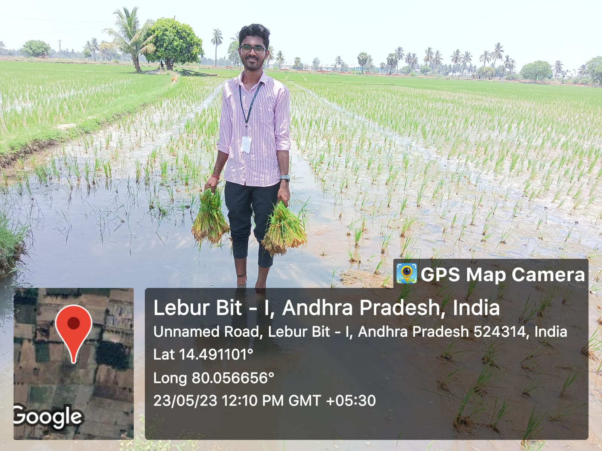 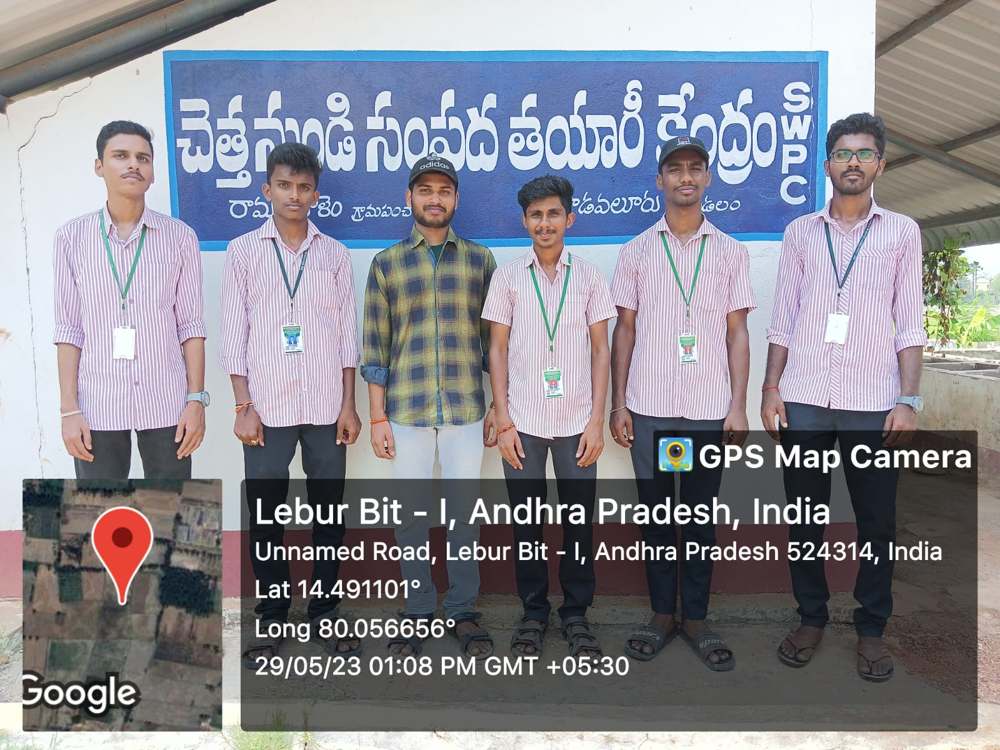 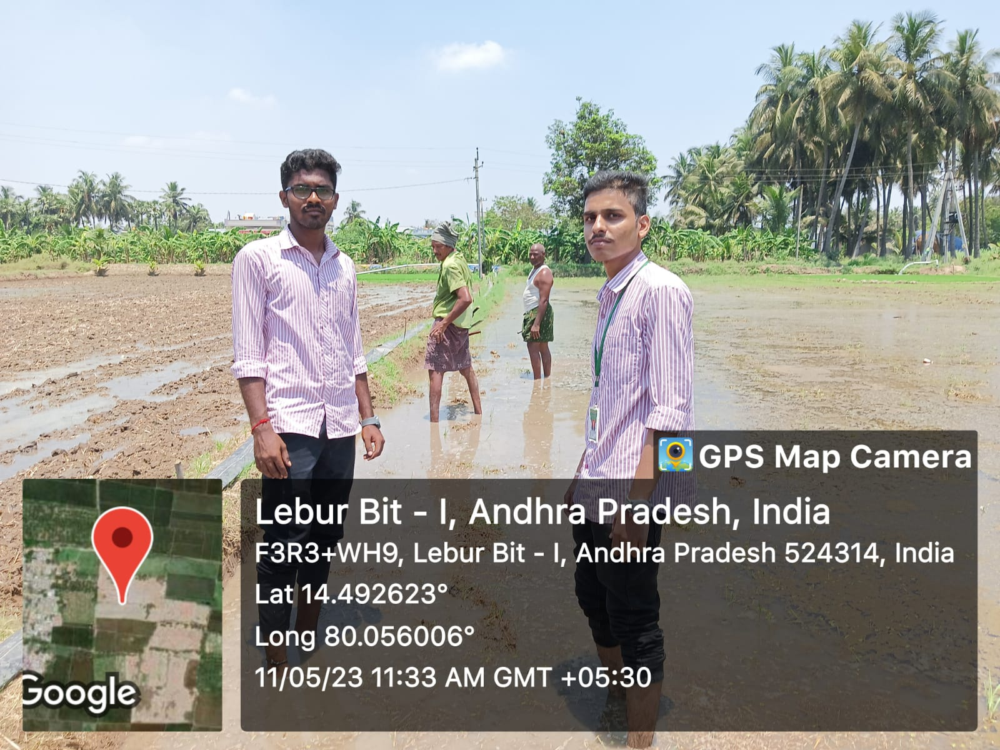 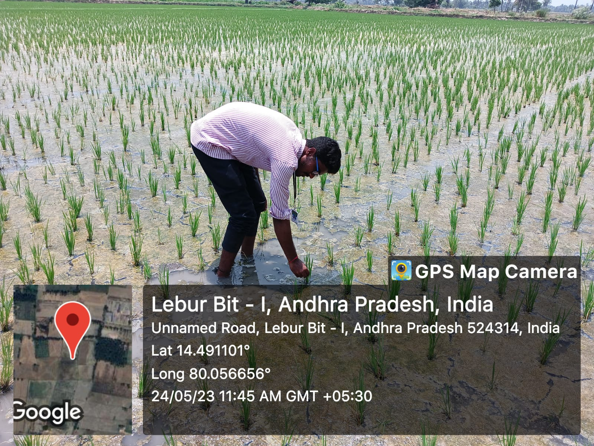- Week - 1 : I went to nearby Sachivalayam for seeking permission for the smooth conduct of the project. Conduct survey on agriculture in lebur village , Nellore dist.
- Week -2 : In this week, I gained some knowledge on agriculture and I can know about the nature farming methods
- Week -3 : I can explain the importance of organic farming and I created awareness on organic farming
- Week -4 : This week I choose paddy crop which is being grown in the surrounding areas.I went to many places around and observed what kind of crops are grown.
- week-5 we can educate the farmers on the principles and importance of organic farming